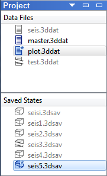

项目窗格
项目窗格是一个三部分的列表，包含三种项目项类型：数据文件（ ）、已保存模型状态（ SAV 文件）和结果文件。
）、已保存模型状态（ SAV 文件）和结果文件。


图 1：项目 窗格。
| 图标 | 状态 | 说明 |
|---|---|---|
| |
已打开、已保存 | 该项目项已保存且当前在 PFC 中打开。 |
| 已打开、未保存 | 该项目项在 PFC 中打开，且自上次保存后已被修改。 | |
| 已关闭 | 该项目项已关闭（即，它未在任何 PFC 窗格中打开）。 | |
| 缺失 | 该项目项由项目跟踪，但在项目所存储的位置上找不到。[1] |
除了显示项目内容之外，该窗格还提供了打开、关闭、运行或恢复项目项的功能，以及在包含这些项目项的各窗格之间切换的功能。
使用该窗格
请记住，一次只能打开一个模型状态，从而使其成为当前模型状态。因此，已保存状态 组中的所有其他模型状态都将显示为已关闭或缺失。
双击项目项
已关闭的数据文件：打开该数据文件。
已打开的数据文件：转到包含该数据文件的窗格。
任何模型状态（打开或关闭）：恢复所单击的模型状态，并根据需要强制关闭当前模型状态（如果当前状态未保存，将弹出警告对话框提示保存）。
缺失的项目项：针对该项目项弹出错误对话框；错误消息将指明预期找到该项目项的完整路径。
右键单击项目项
右键单击数据文件： 提供一个包含命令列表的上下文菜单：
- “在编辑器中打开”（仅在文件已关闭时可用）
- “在编辑器中关闭”（仅在文件已打开时可用）
- “从项目中移除”（不会从硬盘中删除该文件）
- “调用”（在编辑器窗格中打开该文件并运行其中的命令）
- “在 Windows 资源管理器中显示”（自动打开 Windows 文件管理器并导航到包含该文件的文件夹）
右键单击已保存状态： 提供一个包含命令列表的上下文菜单：
- “恢复”（仅当该文件不是活动模型状态时可用）
- “从项目中移除”（不会从硬盘中删除该文件）
- “在资源管理器中显示”（自动打开 Windows 文件管理器并导航到包含该文件的文件夹）
将鼠标悬停在项目项上
将鼠标悬停在某个项目项上会显示工具提示，其中显示该项目项的位置（完整路径）和状态（打开、关闭等）。
分组排序
单击每个分组的列标题（数据文件、已保存状态、结果文件），可按字母升序或降序对所列项目项进行排序（排序后，标题栏顶部中央出现的小箭头表示当前排序顺序）。重复此操作可反转排序方向。
提示
键盘命令 Ctrl+3 可在任何上下文中随时用于显示 项目 窗格（注意该按键命令不会隐藏该窗格）。
尾注
| [1] | 这可能表示与文件路径的链接已失效。不过，对于已保存状态，也可能是该已保存状态尚未创建。例如，程序的示例项目在发布时就不包含其已保存状态，因此会在 项目 窗格中将其显示为“缺失”（可尝试 ）。 |
| 这些内容对您有帮助吗？… 版权与免责声明 | FLAC3D © 2019, Itasca | 原文更新于 2020 年 10 月 8 日 |